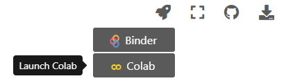

OpenSesame, Anaconda and using this website
Contents
OpenSesame, Anaconda and using this website¶
This course makes use of several software programs and tools. In this session we will guide you through how to use the tools, and how to install the right programs.
OpenSesame¶
We will be making use of the experiment builder OpenSesame. The advantage of this experiment builder is that it allows you to build experiment using both a graphical user interface (GUI) and the programming language Python. To download OpenSesame, navigate to the download page and choose the right installation for your operating system. For Windows, the standard download suffices.
Note
There are other open-source python-based experiment builders with their own advantages/disadvantages. For example, Expyriment is more lightweight than other experiment builders, but you should be comfortable with only coding. PsychoPy is a good alternative for OpenSesame, but also requires a bit more coding proficiency. This course used to be taught in E-prime, which is (paid) software with its own coding language specifically tailored for building experiments.
Anaconda¶
Installing Anaconda is a very convenient way to get started with programming in Python if you are a psychologist/neuroscientist. If you don’t have any prior programming experience, we suggest you download the latest version of Anaconda via this link. You can view Anaconda as a kind of starter pack for doing data-science in Python: it installs not only Python for you, but also all kinds of packages (add-ons) and software that you will most certainly use as a scientist.
Note
A disadvantage of Anaconda is that it also installs a lot of packages/software that you will perhaps never use. Therefore, if you already have experience with programming, a good alternative is miniconda, which gives you all the functionality of Anaconda without the extra packages/software.
Python IDE¶
Just as you type words to make essays in either Word, Pages or Notepad, you can also have different software programs in which you can type Python code to make Python scripts. We call those software programs integrated development environments (IDEs). Conveniently, your Anaconda installation comes with one such IDE: Spyder. Just as Word and Pages have all kind of tools to help you write essays, Spyder comes with all kinds of tools to help you write Python code. However, just as you had to practice with Word to make the best use of the tool, so it is that you’ll need practice to make the best use of Spyder. So lets start right away with making your first script!
If you like learning from video’s, follow these tutorials If you like learning by reading along, follow this tutorial
age = input("What is your age? Type your age here: ")
if int(age) < 24:
print("Wow you are young!")
elif int(age) >= 25:
print("Nice, a real 90s kid")
Save the script as “age_judgement.py”. Then, run the script either by pressing F5 or clicking on the green arrow with “run script”. Type in your age. Do you agree with my judgements? If not, change the age and the response to the age.
Using this website (Jupyter Notebooks and Google Colabs)¶
Lastly, some notes on how to use this website. This website is powered by Jupyter Notebook, a web-based IDE that allows script and text to be integrated in one file. This website is built using Jupyter Book, which collects (amongst other things) Jupyter Notebooks in a nice book-like format. Thanks to this format, we can merge text …
print("... and Python code, all in one file!")
... and Python code, all in one file!
This will be very useful later on, when we will guide you through Python exercises on this website. Just as Spyder, in Jupyter Notebook format you also have a place where you write code, and a place where the output is (console). Now, convert the following piece of code to how you changed it in assignment 1.1:
age = input("What is your age? Type your age here: ")
if int(age) < 24:
print("Wow you are young!")
elif int(age) >= 25:
print("Nice, a real 90s kid")
---------------------------------------------------------------------------
StdinNotImplementedError Traceback (most recent call last)
<ipython-input-2-f60de8a687eb> in <module>
----> 1 age = input("What is your age? Type your age here: ")
2
3 if int(age) < 24:
4 print("Wow you are young!")
5 elif int(age) >= 25:
c:\program files (x86)\python36-32\lib\site-packages\ipykernel\kernelbase.py in raw_input(self, prompt)
847 if not self._allow_stdin:
848 raise StdinNotImplementedError(
--> 849 "raw_input was called, but this frontend does not support input requests."
850 )
851 return self._input_request(str(prompt),
StdinNotImplementedError: raw_input was called, but this frontend does not support input requests.
Hmmm…perhaps you are puzzled now since you are not able to edit this. To be able to interact with the code blocks, you will need to start your own interactive server. For that, click on the rocket on the top right of your screen and choose “Colab”.

A server will start, and you are able to interact with all the code blocks.
Whenever you need to start a Google Colab server, we will make it clear with a note like the following:
Note
For this part of the tutorial you will need to launch the script using Google Colab
There are interactive elements (like multiple choice questions) for which you don’t have to switch, so keep an eye out for this note before you go to Google Colab.